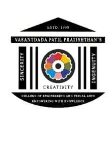

A MINI-PROJECT REPORT ON
Submitted in partial fulfillment of the requirements for the course of
JAVA PROGRAMMING LABORATORY (SEMESTER III)
Degree of Bachelor of Engineering in Information Technology

DEPARTMENT OF INFORMATION TECHNOLOGY
Vasantdada Patil Pratishthan's College of Engineering & Visual Arts, Sion-Mumbai 400022
University of Mumbai
Academic Year 2025–2026
This is to certify that the mini-project entitled "Campus Notify: Institutional Circular & Announcement Management System" has been successfully completed and presented by ______________________________ (Roll No: ____________________), a bonafide student of the Department of Information Technology, in partial fulfillment of the academic requirements for the course Java Programming Laboratory during the academic year 2025–2026.
The project work demonstrates originality, modular object-oriented architecture, comprehensive testing verification, and diligent compliance with university academic norms.
I declare that this mini-project report entitled "Campus Notify: Institutional Circular & Announcement Management System" submitted by me is an authentic record of my own work conducted under the guidance of Prof. ______________________________. The code implementations, test suites, and system diagrams are original, and due credit has been given to all literature, documentation, and external references cited.
Place: Mumbai, India
Date: ____ / ____ / 2026
______________________________________
Signature of Candidate
I express my sincere thanks to our respected Principal and Head of the Department for extending the computational laboratory resources and continuous encouragement.
I convey my profound gratitude to my project guide Prof. ______________________________ for their insightful advice, constructive feedback, and dedicated mentorship throughout the software design, Java implementation, and testing phases.
Efficient communication between college management, academic faculties, and students is essential for high institutional productivity. Traditional wooden bulletin boards and chaotic messaging groups often fail due to paper damage, physical location constraints, forged announcement forwards, and poor search capabilities.
Campus Notify addresses these critical problems by delivering a robust, object-oriented notification engine engineered in Core Java (JDK 17+). Built on a clean Model-View-Controller (MVC) architecture, the system provides:
BufferedReader and PrintWriter), ensuring announcements persist across sessions.The system's reliability and security are validated through a 9-pillar automated verification suite with 36 automated test cases achieving a 100% pass rate.
In engineering colleges and university campuses, dozens of circulars are published weekly: examination timetables, submission deadlines, cultural festival schedules, training and placement drives, fee notifications, and laboratory schedules. Relying on physical bulletin boards results in missed deadlines and unread notices, while group messaging platforms (such as WhatsApp) suffer from chat spam and lack of authorization.
Existing academic notification practices suffer from three main drawbacks:
A comparative study was conducted across traditional and contemporary communication platforms:
| Metric / Feature | Physical Board | Messaging Apps | Campus Notify (Proposed) |
|---|---|---|---|
| Access Speed | Requires physical presence | Instant | Instant (CLI + Web) |
| Keyword Search | None | Poor / Chat history | High-speed substring search |
| Category Filtering | None | None | Filter by Category & Priority |
| Role-Based Access Control | Manual lock and key | Admin only (coarse) | Granular RBAC (Admin, Faculty, Student) |
| Offline Durability | Paper based | Cached chats | File I/O + LocalStorage cache |
| Resource Overhead | Paper, printing cost | High RAM/data | Ultra-lightweight Java runtime |
The architecture adheres to the Model-View-Controller (MVC) software design pattern:
User.java, Notification.java): Encapsulates academic entities, data validation, and serializable attributes.NotificationManager.java): Executes business logic, CRUD operations, keyword searching, category filters, analytics, and file persistence.Main.java & Web Dashboard): Presents formatted output tables to the user and captures validated inputs.+-------------------------------------------------------------+
| User |
+-------------------------------------------------------------+
| - id: String |
| - name: String |
| - role: String ("Admin", "Faculty", "Student") |
| - department: String |
| - email: String |
| - canPostNotices: boolean |
+-------------------------------------------------------------+
| + canPostNotices(): boolean |
| + getRole(): String |
+-------------------------------------------------------------+
^
|
+-------------------------------------------------------------+
| Notification |
+-------------------------------------------------------------+
| - id: int |
| - title: String |
| - description: String |
| - category: String (Academic, Exam, Events, Placement) |
| - priority: String (Urgent, High, Normal) |
| - author: String |
| - datePosted: Date |
+-------------------------------------------------------------+
| + toFileString(): String |
| + fromFileString(line: String): Notification |
+-------------------------------------------------------------+
^
| (Managed in List<Notification>)
+-------------------------------------------------------------+
| NotificationManager |
+-------------------------------------------------------------+
| - notifications: List<Notification> |
| - nextId: int |
| - dataFilePath: String |
+-------------------------------------------------------------+
| + addNotification(...): boolean |
| + deleteNotification(id: int): boolean |
| + searchByKeyword(keyword: String): List<Notification> |
| + filterByCategory(category: String): List<Notification> |
| + filterByPriority(priority: String): List<Notification> |
| + displayAnalyticsSummary(): void |
+-------------------------------------------------------------+
All data members in User and Notification are marked with the private access modifier. State inspection and mutation occur through getter and setter methods that enforce validation (e.g., rejecting empty titles, formatting dates).
Constructors are overloaded to accommodate both runtime generation (with current timestamps) and deserialization from persistent disk storage (parsing historic timestamps).
The application utilizes java.util.ArrayList for dynamic in-memory notice buffering and java.util.Iterator for deletion operations to prevent ConcurrentModificationException during traversals.
Data persistence is implemented using BufferedReader and PrintWriter with custom delimiter-separated serialization (|||), preventing field corruption when descriptions contain standard punctuation.
User.javapublic boolean canPostNotices() {
return canPostNotices || "Admin".equalsIgnoreCase(role);
}Notification.javapublic String toFileString() {
return id + "|||" + title + "|||" + description + "|||" +
category + "|||" + priority + "|||" + author + "|||" +
DATE_FORMAT.format(datePosted);
}NotificationManager.javapublic boolean deleteNotification(int id) {
Iterator<Notification> it = notifications.iterator();
while (it.hasNext()) {
if (it.next().getId() == id) {
it.remove();
saveToFile();
return true;
}
}
return false;
}
The project includes an automated test harness (test_complete_suite.js) verifying 36 key test scenarios:
| Pillar No. | Pillar Focus | Test Verification Assertions | Result |
|---|---|---|---|
| Pillar 1 | Zero-Access Auth Wall | Guest session locked, notices obscured, unauthenticated likes blocked | PASS |
| Pillar 2 | Super Admin Auth | Admin authentication, role assertion, hasPostingAuthority() true |
PASS |
| Pillar 3 | Notice Dispatch | Circular creation by authorized admin, notice counter incremented | PASS |
| Pillar 4 | Viewer Restriction | Posting denied for student roles, error banner rendered | PASS |
| Pillar 5 | Authority Delegation | Super Admin promotes faculty account, posting authority unlocked | PASS |
| Pillar 6 | Viewer Engagement | Like counters increment, emoji reactions, inquiry comments saved | PASS |
| Pillar 7 | Notice & Comment Deletion | Students blocked from deleting; Super Admin successfully deletes | PASS |
| Pillar 8 | Discussion Lounge | Community lounge messaging, real-time sync, and UI rendering | PASS |
| Pillar 9 | Multi-Account Governance | Registration status PENDING, login blocked until approved |
PASS |
================================================================
CAMPUS NOTIFY - OFFICIAL CAMPUS NOTIFICATION MANAGEMENT SYSTEM
================================================================
Connected User: [ADMIN-01] System Administrator (Admin)
Department: Central Administration | Email: admin@campusnotify.edu
Posting Authority: GRANTED (Super Administrator Desk)
================================================================
+----+------------------------------------+-------------+----------+--------------------------+------------------+
| ID | Title | Category | Priority | Author | Date Posted |
+----+------------------------------------+-------------+----------+--------------------------+------------------+
| 1 | End-Semester Theory Exam Timetable | Examination | Urgent | Central Exam Cell | 2026-03-15 10:30 |
| 2 | Tech Innovation Hackathon 2026 | Events | High | IT Department | 2026-03-14 14:15 |
| 3 | Campus Placement Drive: TCS | Placement | High | Training & Placement Cell| 2026-03-12 09:00 |
| 4 | Library Book Return Deadline | Academic | Normal | Central Library | 2026-03-10 11:45 |
+----+------------------------------------+-------------+----------+--------------------------+------------------+
Total Announcements Active: 4The Campus Notify mini-project successfully demonstrates the application of object-oriented design patterns in Core Java to resolve a real-world institutional problem. The system delivers an authentic, secure, and searchable announcement pipeline that eliminates reliance on unverified physical and social media messaging.